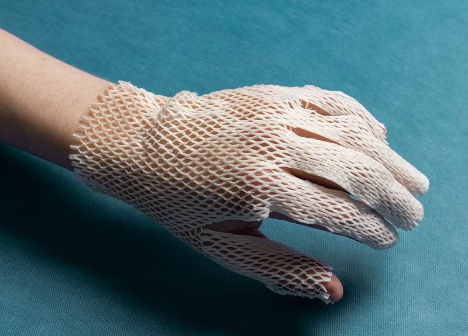

Nordic case
From fish skin to Nordic unicorn
Kerecis turned an underutilised fish by-product into a billion-dollar medtech business — proving how circularity, proprietary technology and market access can create both better outcomes and exceptional commercial value.
Explore case